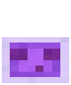

You died!¡Has muerto!
This page doesn't exist, or I moved it.Esta página no existe, o la moví.
Score: Puntuación: 404
NOT AN OFFICIAL MINECRAFT SERVICE. NOT APPROVED BY OR ASSOCIATED WITH MOJANG OR MICROSOFT.

This page doesn't exist, or I moved it.Esta página no existe, o la moví.
Score: Puntuación: 404
NOT AN OFFICIAL MINECRAFT SERVICE. NOT APPROVED BY OR ASSOCIATED WITH MOJANG OR MICROSOFT.